|
Research (📝)
My current research focuses on
- developing deep learning-based models for joint kinematics estimation with wearable sensors,
- integrating deep learning into wearable technology for monitoring at-home physical exercises, and
- designing and building (affordable) wearable devices for biomechanical research and applications in emerging economies.
Previously, I worked on
- applying deep learning to enhance predictive modeling for fall detection and prevention,
- developing balance measures for improving our understanding of posture biomechanics, and
- investigating postural balance control of people with neurological disorders, or healthy people under challenging conditions.
Please feel free to connect if you are interested in advancing biomechanical research and applications in emerging economies, or would like to discuss my current and previous studies.
Below is the list of my publications since 2020 (J stands for Journals, and C for Conferences).
|
|
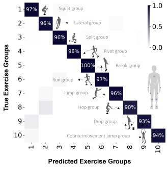
|
[J] Seven Things to Know about Exercise Classification with Inertial Sensing Wearables
Vu Phan,
Ke Song,
Rodrigo Scattone Silva,
Karin Gravare Silbernagel,
Joshn Baxter, and
Eni Halilaj
IEEE Journal of Biomedical and Health Informatics, 2024
(Impact Factor: 7.7 | updated in 2024)
paper / code / data
|
|
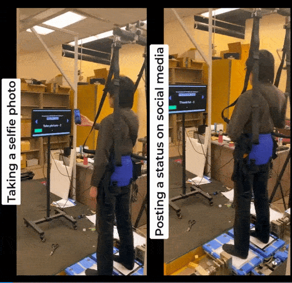
|
[J] Modern Smartphone Usage Can Negatively Impact Postural Balance While Standing on Dynamically Challenging Grounds
William Noll, Vu Phan, and
Hyunglae Lee
Gait and Posture, 2024
(Impact Factor: 2.4 | updated in 2023)
paper
|
|
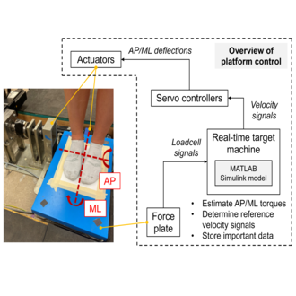
|
[J] Characterizing Postural Balance on 2-Dimensional Compliant Surfaces with Directional Virtual Time-to-Contact
Vu Phan, Soe Ling Paing, and
Hyunglae Lee
Human Movement Science, 2023
(Impact Factor: 2.1 | updated in 2023)
paper / code
|
|
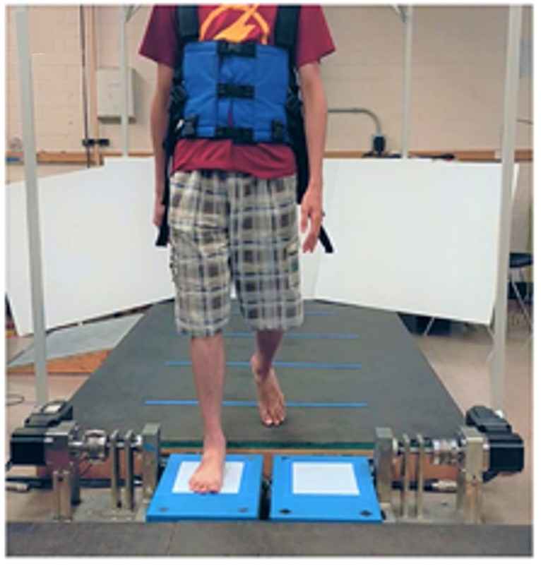
|
[J] Introduction to a Twin Dual-Axis Robotic Platform for the study of Lower Limb Biomechanics
Joshua Russel, Connor Phillips, Matthew Auer, Vu Phan, Kwanghee Jo,
Omik Save,
Varun Nalam, and
Hyunglae Lee
IEEE Journal of Translational Engineering in Health & Medicine (JTEHM), 2023
(Impact Factor: 3.4 | updated in 2023)
paper
|
|
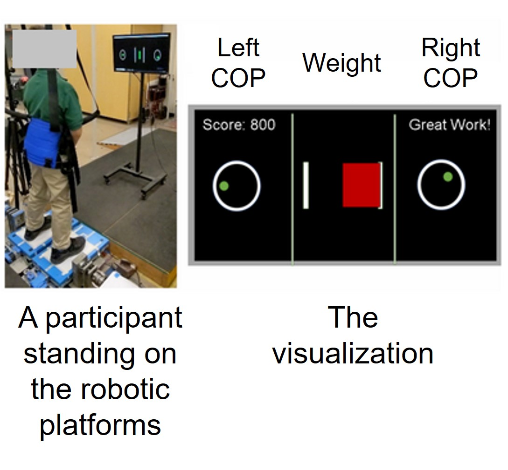
|
[J] Perturbation-based Training on Compliant Surfaces to Improve Balance in Children with Cerebral Palsy: A Feasibility Study
Connor Phillips, Vu Phan, Kwanghee Jo, Omik Save, Joshua Russell, Kayla Zeien, Megan Eikenberry, Carolyn Kinney, and
Hyunglae Lee
IEEE Transactions on Medical Robotics and Bionics (T-MRB), 2023
(Impact Factor: 3.7 | updated in 2023)
paper
|
|
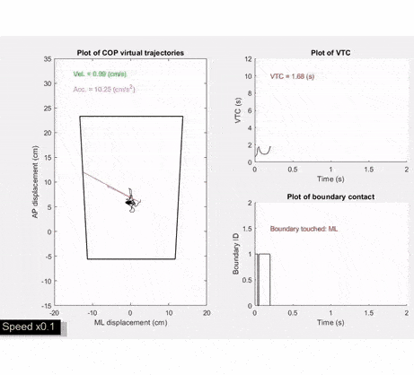
|
[J] Directional Virtual Time-to-Contact: A New Measure for Investigating Temporal, Spatial, and Control Aspects of Postural Balance Control
Vu Phan,
Daniel S. Peterson, and
Hyunglae Lee
Journal of Biomechanics, 2023
(Impact Factor: 2.4 | updated in 2023)
paper / code / supplementary video
|
|
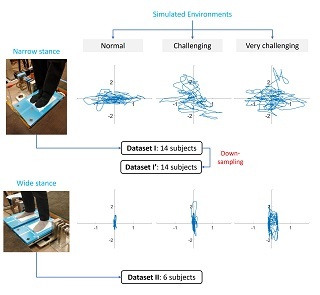
|
[J] Deep Learning: Predicting Environments from Short-time Observations of Postural Balance
Vu Phan and
Hyunglae Lee
IEEE Transactions on Biomedical Engineering (TBME), 2022
(Impact Factor: 4.6 | updated in 2023)
paper
|
|
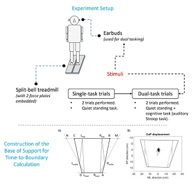
|
[J] Effects of Dual-tasking on Time-to-Boundary during Stance in People with PD: A Preliminary Study
Daniel S. Peterson, Vu Phan,
Sutton Richmond, and
Hyunglae Lee
Clinical Biomechanics, 2021
(Impact Factor: 1.8 | updated in 2023)
paper
|
|
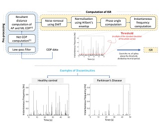
|
[C] Intermittent Switching Rate as a Measure to Assess Impacts of Parkinson's Disease and a Secondary Cognitive Task on Postural Balance
Vu Phan, Daniel S. Peterson, and
Hyunglae Lee
Virtual 45th Meeting of the American Society of Biomechanics (ASB), 2021
(Oral Presentation)
abstract (p. 144) /
presentation (at 19:45)
|
|
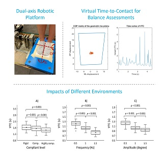
|
[C] Standing Postural Balance under Multi-directional Perturbations
Vu Phan, Lauren Berrett, and
Hyunglae Lee
Virtual 45th Meeting of the American Society of Biomechanics (ASB), 2021
(Poster Presentation)
abstract (p. 143)
|
|
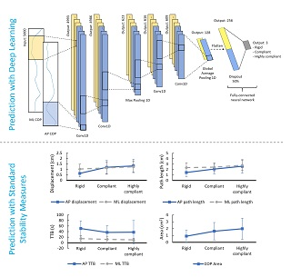
|
[C] Prediction of Ground Conditions during Postural Balance using Deep Learning
Vu Phan and
Hyunglae Lee
Virtual 45th Meeting of the American Society of Biomechanics (ASB), 2021
(Poster Presentation)
abstract (p. 142)
|
|
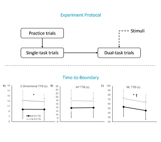
|
[C] Effects of Parkinson's Disease and a Secondary Cognitive Task on Standing Postural Stability
Vu Phan, Daniel S. Peterson,
Sutton Richmond, and
Hyunglae Lee
The 5th International Conference on NeuroRehabilitation (ICNR), 2020
(Poster Presentation)
paper
|
- Best Poster Presentation (Bioengineering Category) in the MechE Graduate Research Symposium / Travel Award • Carnegie Mellon University (2023)
- Graduate Fellowship • Carnegie Mellon University (2022 - 2027)
- Master's Opportunity for Research in Engineering (MORE) • Arizona State University (Fall 2020, Spring 2021)
- Kaplan International Award • Arizona State University (2020, 2021)
- Scholarship for Talented Engineer Student • Vietnam National University (2013 - 2016)
- Dean's List • Ho Chi Minh City University of Technology (2012, 2013)
- The Second Prize for the 3rd Technical Design Competition • Ho Chi Minh City University of Technology (2013)
- Director of media & session leader of the National Biomechanics Day at Carnegie Mellon University (2023, 2024)
- Teaching assistant of the 24663 - Biomechanics of Human Movement class • Carnegie Mellon University (Fall 2023)
- Teaching assistant of the 24665 - Wearable Health Technology class • Carnegie Mellon University (Spring 2024)
- Reviewer of Springer Nonliner Dynamics journal (2024)
- Reviewer of the IEEE IROS (2022)
- Mentor of 2 (honor) undergraduate students (both received research awards for their research projects) • Arizona State University (2020, 2021)
- Grader of the EEE511 - Artificial Neural Computation class • Arizona State University (Spring & Fall 2021)
- Teaching Assistant of the BM095IU - Medical Instrumentation class • Ho Chi Minh City International University (Fall 2019)
Thanks Jon Barron for this template.
Last updated on April 9, 2024.
|
|
{kind=link}